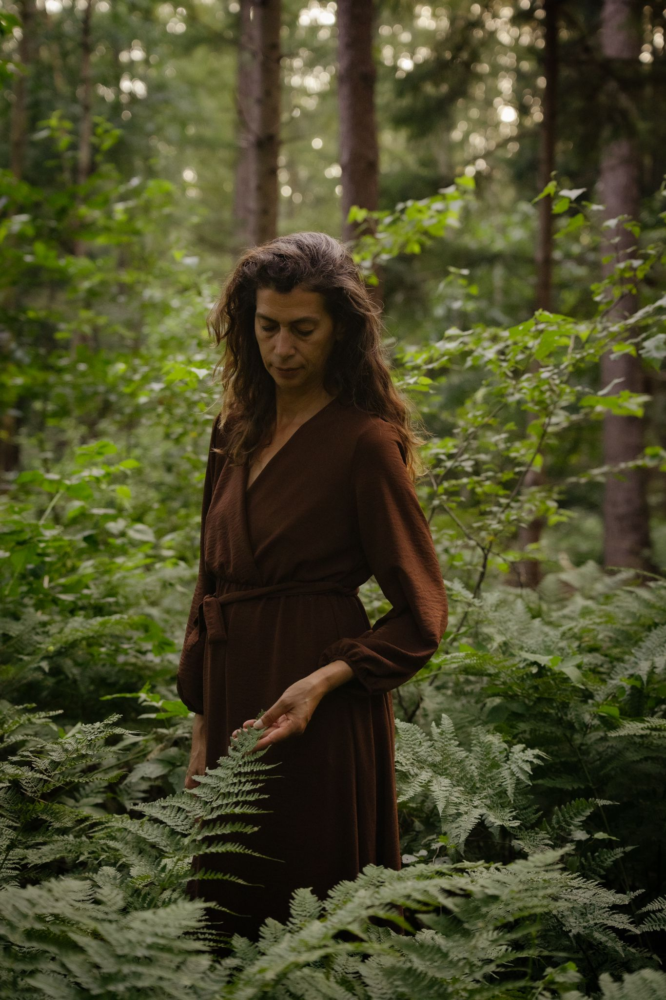

Ik begeleid je om te luisteren naar wat je lichaam je al langer probeert te vertellen. Spanning, blokkades en terugkerende patronen worden zichtbaar — zodat jij weer rust en richting ervaart.
Ontdek het aanbod Maak een afspraak
Soms fluistert je lichaam wat je hoofd nog niet kan horen. Mijn begeleiding is er voor vrouwen die verlangen naar echte diepgang.
Of je nu online wilt starten (wereldwijd mogelijk) of liever live in de praktijk komt in San Fulgencio — we beginnen altijd met een zachte kennismaking en bouwen verder als het resoneert.
Veilige videoverbinding – overal ter wereld. Gesprek, lichaamsbewustzijn en praktische oefeningen voor thuis.
5 sessies van 75 min – laag voor laag patronen doorbreken en duurzame rust vinden.
Met bijna 10 jaar ervaring in massagetherapie en energiewerk, help ik je te landen in je lijf wanneer je vastloopt in spanning. Ik werk rustig, nuchter en met beide benen op de grond. Geen snelle oplossingen — wel echte aandacht.
In mijn praktijk in San Fulgencio creëer ik een veilige haven waar je even niets 'moet'. Samen kijken we naar wat je lichaam te vertellen heeft, zodat je weer met helderheid en bezieling verder kunt.
Lees mijn volledige verhaal →
“Heerlijke stevige massage gehad van een lieve vrouw die duidelijk met haar hart masseert! .
Mijn dank is groot🙏🏼.”
— Shirley, Dolores, ES
“Ik kwam voor ontspanning en ging weg met inzicht.”
— Anoniem, 47 jaar
Herken je jezelf hierin? Plan een kennismaking →